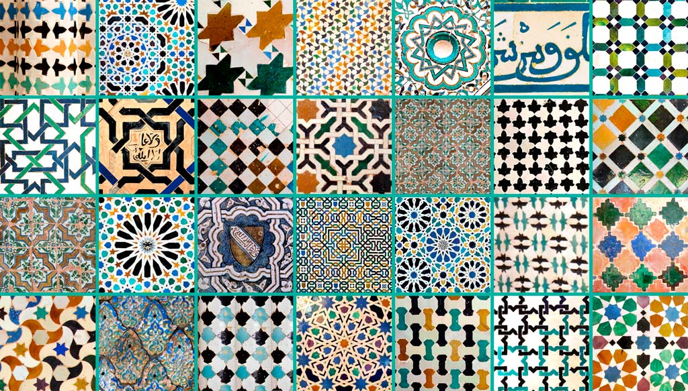

LOS AZULEJOS NAZARÍES
Con las actividades anteriores hemos estado trabajando con los polígonos, los hemos clasificado, hemos trabajado con sus elementos (ángulos vértices y lados) y hemos visto su presencia en nuestra vida cotidiana.
La única forma de formar un panal de abejas, donde se utilice un único polígono y se rellene el plano de forma uniforme, es con los triángulos equiláteros, los cuadrados y los hexágonos. Cuando estéis en secundaria estudiaréis por qué las abejas eligieron los hexágonos, algo que va a estar relacionado con la “economía”, ya que el hexágono será la figura que emplee menos material de construcción y que almacene más cantidad de miel.
No obstante hay muchas formar de “rellenar el plano” usando otro tipo de polígonos y de “tramas”, lo que en matemáticas se conoce como teselaciones del plano, siendo el verbo “teselar” sinónimo de "rellenar el plano” y cada una de las piezas que rellenan se llaman teselas. Ya hemos visto que cualquier triángulo y cuadrilátero tesela el plano, pero las opciones son muy variadas con formas y construcciones presentes en el arte y la arquitectura.
Famosas en Andalucía son loa azulejos nazaríes (teselaciones nazaríes), elaborados por los artesanos islámicos, con grandes conocimientos geométricos y matemáticos, que vivían en Andalucía en la Edad Media, siendo la Alhambra de Granada el mayor testigo arquitectónico que hemos conservado de las dinastías nazaríes de Al Andalus.

Esta tradición del azulejo nazarí se ha mantenido en Andalucía hasta nuestros días, decorando infinidad de patios y casapuertas de nuestras casas.
En el siguiente vídeo podéis ver algunos ejemplos de azulejos de la Alhambra de Granada, la gran mayoría se construyen transformando triángulos, rectángulos y hexágonos: